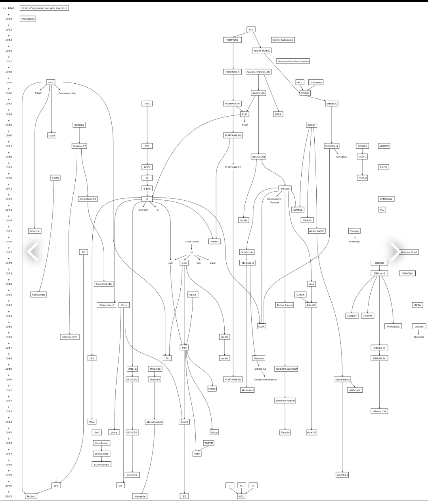

programing languages
links
Programming languages went through many developmental stages, starting with a digital language known as God, which is a low-level language, and with the increasing prevalence of programming, problems increased for this language, which led programmers to develop this language, and it started to develop in several stages until it reached a high level of programming languages.
HTML imge
